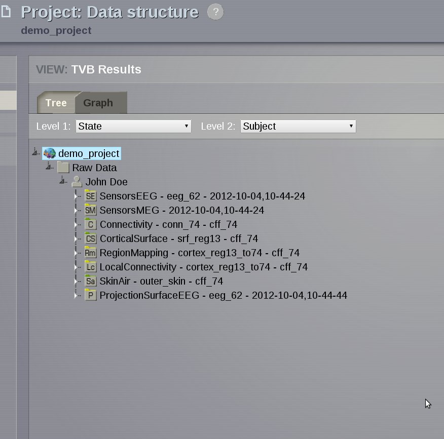
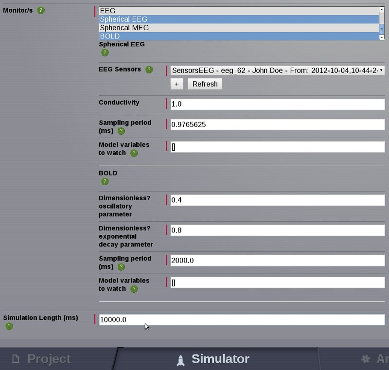
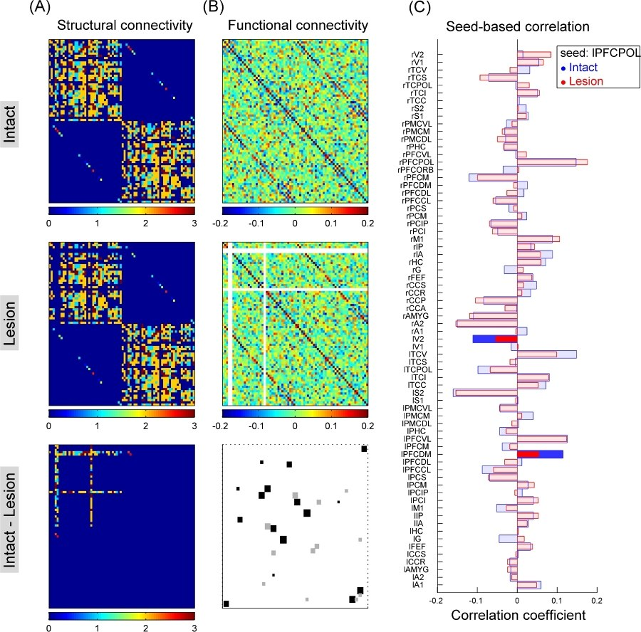

We present here some basic simulation scenarios that the user should be able to reproduce through the |TVB| interface.
Example 1
Generating resting activity data using the default simulator configuration
Objective: generate 16 seconds of resting state activity data, sampled at 2048Hz, by launching a region-based simulation using a stochastic integration method.
Run time is approximately 4 minutes using one computing core of an Intel Xeon Westemere 3.2 GHz, memory requirement < 1GB, data storage requirement ~ 19MB.
Sanity check
Objective: getting started with |TVB|. Quickly evaluate if the produced data is rational.
Summary: Configuring parameters for a simulation will mainly depend on the nature of your scientific question. Assume that you want to simulate data to compare to some real MEG data.

The Generic 2D Oscillator model in an oscillatory regime (limit cycle). Dynamics are similar to the Fitzhugh-Nagumo model.
Conduction speed is 1000, 42 and 3 [mm/ms] for the upper, middle and bottom panel respectively.
Simulating EEG-fMRI whole brain dynamics for individual connectivity matrices
Objective: learn how to upload your own (i.e., artificial or subject-specific) connectivity data and generate the corresponding simulated EEG and fMRI signals.
Summary: In |TVB| platform it is possible to upload your own large-scale connectivity datasets (e.g., derived from DTI tractography), edit them (e.g., in order to mimic brain lesions) and generate simulated imaging signals like EEG and BOLD. In the present study, a lesion in a given node area is modeled by removing all the incoming and ongoing connections into and from this node.

- Here we set the multiplicative long-range connection strength factor a equal to 17.2 and the conduction speed to 10 mm/ms.
- Then we choose Stefanescu-Jirsa (reduced Hindmarsh-Rose) as Local dynamic model and use HeunStochastic as Integration scheme and an Integration step size of 0.0156 ms.
- We select Spherical EEG and BOLD as monitors and set the EEG Sampling period to 1 ms and the simulation length to 4000 ms.
- Configure portlets to view simulation results, e.g., the EEG lines viewer for EEG simulations.
- Name the new simulation and launch it.
Note
Please check that simulation length is larger than the BOLD sampling period!!
A simple lesion study using TVB
Objective: learn how to generate simulated brain activity to study the impact of brain lesions on functional patterns of activity.
Summary: In |TVB| platform it is possible to edit a connectivity matrix to mimic brain lesions. In the present study, a lesion in a given node area is modeled by removing all the incoming and ongoing connections into and from this node.
- Assuming that you have already created your project:
- Enter the Connectivity area and click on Long Range Connectivity.
- Select the default connectivity matrix and click the Launch button.
- On the right side the node-by-node connectivity matrix is displayed. You can select the quadrant to be displayed on the screen by accessing the quadrant selector.
- Unselect the nodes you want to lesion by clicking directly on the region labels. This will remove all the incoming and ongoing connections into and from those nodes. Here we choose to lesion the following cortical areas: lCCA, lCCP, and lPFCORB.
- Enter a name for this new selection, save it and click on the star icon on the top-right to save the new matrix.
- Go to Project area and enter the Data Structure page. The new connectivity matrix should be available in Intermediate Data.
- By selecting the new Connectivity, you will access its Datatype Details allowing you to get information about the data, visualize them and export them.
- From the Visualizers tab you can launch a display to see the new matrix.
- Simulate data using both connectivity matrices. You can now use the new connectivity matrix to simulate brain activity, using the TVB Simulator. Here we choose the BOLD model with underlying FitzHugh-Nagumo equations for the local dynamics. The goal is to run two long simulations, one using an intact connectivity and another using the connectivity with lesions. Except for the connectivity matrix, all parameters are the same (including the random number generator seed).
- In the Simulator area - central column - you can choose the long-range connectivity. Select the new connectivity matrix containing the lesions.
- Set the local dynamic model to Fitz-Hugh Nagumo.
- Select BOLD in Monitors.
- Name the new simulation and launch it.
- Repeat the previous steps but choosing the default matrix (intact) as the Long-range connectivity.
- Go to the Operations board. You can follow the state of the simulations. When simulations are finished your results will be represented by its datatype icons.
- Export the results of both simulations and the connectivity matrices.
- You can export the results by choosing Export: -> TVB format. The data will be stored in an HDF5 file (“filename.h5”) which can be used to do further analysis using other software of your choice.
Here we choose MatLab to process the data. To read the HDF5 file in MatLab do:
hinfo = hdf5info('filename.h5');
% hinfo is a structure containing the data in the field
% hinfo.GroupHierarchy.Datasets.
To read the data use the hdf5read function. For our simulations hinfo.GroupHierarchy.Datasets(1) contains the BOLD activity and hinfo.GroupHierarchy.Datasets(2) contains the time:
Time = hdf5read(hinfo.GroupHierarchy.Datasets(2));
bold = hdf5read(hinfo.GroupHierarchy.Datasets(1));
N = size(bold,2);
T = size(bold,4);
% Where N is the number of cortical areas (=74) and T the number of time
% points.
You can compact the data to a 2-dimension matrix as:
bold_new = zeros(T,N,2);
bold_new(:,:,1) = reshape(bold,[T N]);
You are now ready to work with bold_new using the tools of MatLab.
Results
For each condition, intact and lesion, we calculated the correlation matrix (functional connectivity) and evaluated whether correlations change in pairs of nodes. To asses significant changes we calculated the correlation matrix in non-overlapping time windows of 200 time points. In this way, we obtained a distribution for each pair-wise correlation coefficient, allowing statistical treatment. Correlation coefficients were fisher z-transformed and compared (by means of t-tests) in intact vs. lesion conditions. We found that lesions induced both significant increases and decreases of correlations between intact nodes, even for pairs of nodes in different hemispheres.
A) Top: Intact connectivity matrix. Middle: Connectivity matrix with lesions. Bottom: Difference between intact and injured connectivity matrices. Connection strengths are indicated in color code. B) Top: Intact functional connectivity. Middle: Functional connectivity with lesions. Pearson pair-wise correlation coefficients are indicated in color code. Bottom: Significantly different pair-wise correlations in intact vs. lesion conditions (squares are proportional to correlation difference). Black: lesion significantly decreased correlation coefficient with respect to intact correlations. Gray: lesion significantly increased correlation coefficient with respect to intact correlations. C) Example of seed-based based correlations. Dark and light colors indicate significant and non-significant differences of correlation coefficients, respectively. Seed: left prefrontal polar cortex.
Performing parameter space exploration
Objective: learn how to sweep and search across different simulation settings that run on a distributed infrastructure.
Summary: In |TVB| platform it is possible to launch parallel simulations to explore the changes in dynamics of the brain as a function of the local dynamics parameters. We illustrate this process with a case study in larg-scale brain simulations within |TVB|.
- Assuming that you have already created your project:
- Enter the Simulator area.
- Select the default connectivity matrix.
- Choose the local dynamic model 2D Generic Oscillator
- Click on the ‘V’ button next to the model parameters to unfold the available parameter range and step size. At present, a maximum of 2 parameters can be explored at the same time.
- For Iext set the step size to 0.4 and for a 0.5
- Name the new simulation and launch it.
- After all simulation are finished, you should be able to see the Parameter Space Exploration Visualizer.

Each point in this two dimensional graph represents two metrics: by default Global Variance corresponds to the size of the point and Variance of the Variance of nodes maps the color scale.
- From those results, critical combination of parameters can be distinguished.
- If you go to Project area and enter the Data Structure page. The results of all simulations will be held under one object called DataTypeGroup.
- Export the results of all simulations.
- You can export the results by clicking on the aforementioned object and selecting the Export tab: -> TVB format. The data will be available for download in a .zip file.
- Within this folder you will find the TimeSeries for each possible parameter combination. Data are stored as HDF5 files (“filename.h5”) which can be used to do further analysis using other software of your choice.
Generate a spatiotemporal stimulus
Objective: learn how to create a spatiotemporal pattern to study the influence of a stimulation paradigm to outline different patterns of neural activity.
Summary The intention is to have a platform capabable of having a representation of stable and unstable sources. The goal is to observe the effect of the stimulation.
Assuming that you have already created your project:
Go to the Stimulus area –> Surface Stimulus page.
Enter a new name for the new Surface Stimulus.
Choose the default Cortical Surface.
Select the Mexican-hat equation to define the spatial spread of the stimulus.
Spatial parameters are:
Inputs Value midpoint1 20.0 midpoint2 0.0 amp1 1.0 amp2 1.0 sigma1 20.0 sigma2 10.0 Temporal parameters are:
Inputs Value amp 1.0 frequency 0.1 Click on View Stimulus Progress
Select 10 focal nodes on the right hemisphere.
Click on Save new Stimulus Surface
Your spatiotemporal pattern should be available. You can load it and play the animation on the cortical surface.
Go back to Edit Stimulus Equation
Set new equations and parameters for both spatial and temporal profiles.
Add 10 focal nodes on the left hemisphere.
Enter a new name for this new Stimulus Surface and save it.
You can visualize the new pattern.
Warning
The maximum number of focal points you are allowed to add is 20.